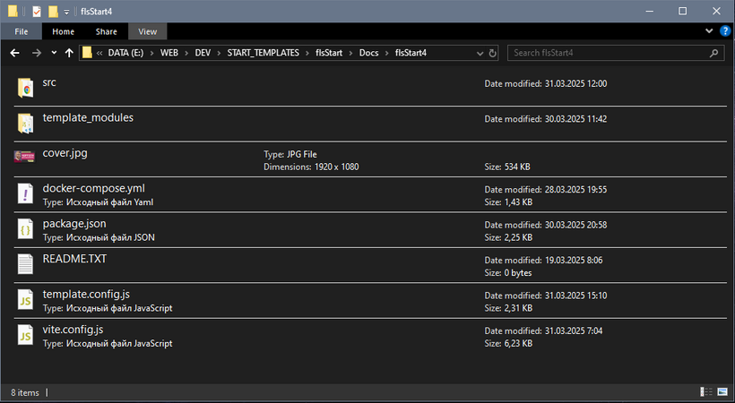
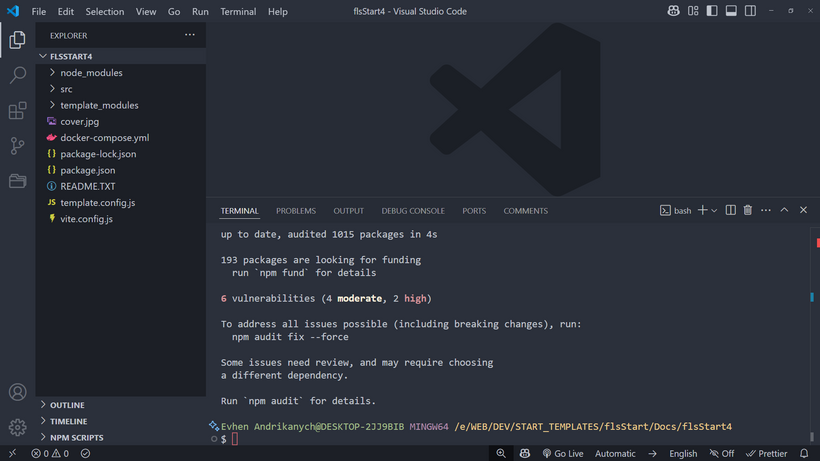
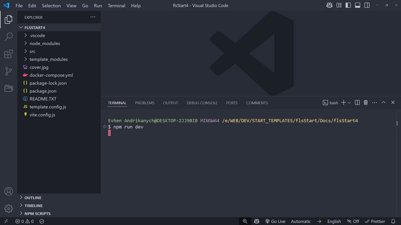
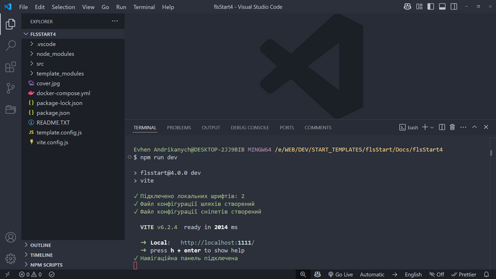

Встановлення шаблону
Насамперед слід розархівувати zip-архів у вашу папку проекту. Слідкуйте за тим, щоб папка та її батьківські папки не містили в назві кирилицю, пробіли, символи # та !
Вміст архіву в папці проекту
Якщо ви до цього моменту не користувалися NodeJS та пакетним менеджером NPM, слід завантажити та встановити Node.js. Завантажуйте версію рекомендовану для більшості.
Далі відкриваємо термінал у цій папці проекту. Термінал може бути вбудований або відкритий окремо від редактора. Рекомендую використовувати термінал GIT Bash.
Після завершення встановлення необхідних інструментів введіть команду npm i
У процесі установки в терміналі можуть бути повідомлення з позначкою WARN жовтим кольором. Ці повідомлення можна ігнорувати. Але якщо ви отримуєте повідомлення ERR! червоним кольором — це критична помилка та її потрібно виправляти.

Попередження можна ігнорувати
Після успішного встановлення, у вас з'явиться папка node_modules та файл package-lock.json
Встановлення завершено
Детальніше про архітектуру папок та файлів ЧФ ми поговоримо в наступному розділі, а поки що продовжуємо підготовку до роботи
Запуск шаблону та режими роботи
ЧФ4 може виконувати різні сценарії сценаріїв:
1. Режим розробника. Команда запуску npm run dev
2. Режим розробника з зовнішнім IP. Команда запуску npm run online
3. Режим продакшену. Команда запуску npm run build
4. Режим перегляду результату виконання продакшену. Команда запуску npm run preview
5. Режим продакшена та надсилання результату на сервер по FTP. Команда запуску npm run deploy
6. Режим продакшена та створення ZIP-архіву з результатом. Команда запуску npm run zip
7. Режим розробника під CMS WordPress. Команда запуску npm run wp
8. Режим продакшена під CMS WordPress. Команда запуску npm run wpbuild
9. Зупинка Docker-серверу. Команда запуску npm run wpstop
Режим розробника
У режимі розробника виконуються лише необхідні для розробки завдання:
1. Конвертація OTF/TTF шрифтів у WOFF2 та підключення до проєкту
2. Створення іконкового шрифту та підключення до проєкту
3. Опрацювання HTML-файлів, перейменування псевдонімів
4. Опрацювання препроцесора PUG, перейменування псевдонімів
5. Опрацювання JS-файлів
6. Опрацювання SCSS/CSS-файлів
7. Запускається локальний сервер, відкривається браузер з індексною сторінкою.
8. Запускається спостерігач за зміною фалів. При кожній зміні файлів браузер оновлює сторінку
9. Увага! В режимі розробника HTML CSS JS файли результату не записуються на диск (папка dist не створюється).
Режим продакшену
У режимі продакшену виконується фіналізація проекту, а саме:
1. Конвертація (за потреби) OTF/TTF шрифтів у WOFF2 та підключення до проєкту
2. Конвертація зображень у WEBP/AVIF формат. Створення файлів різних розмірів. Стиснення та оптимізація JPG PNG SVG зображень
3. Конвертація SCSS файлів у CSS файли, перейменування псевдонімів, групування медіа-запитів, додаються вендорні префікси для забезпечення кросбраузерності, обробляється підключення WEBP/AVIF зображень, проводиться стиснення. Можуть створюватись нестиснуті копії файлів. Можуть створюватись критичні стилі.
4. Обробка та форматування HTML файлів, перейменування псевдонімів, обробляється підключення WEBP/AVIF зображень та різних розмірів файлів.
5. При використанні PUG, файли перетворюються на HTML, перейменовуються псевдоніми, обробляється підключення WEBP/AVIF зображень та різних розмірів файлів.
6. Збираються JS файли, проводиться стиснення та оптимізація кінцевого файла. У результат потрапляє лише використовуваний код. Можуть створюватись нестиснуті копії файлів.
7. Копіюються файли із зазначеної папки
8. Увага! Всі файли з результатом записуються на диск до папки dist, локальний сервер не запускається
Отже, давайте запустимо наш шаблон в режимі розробника, для цього в терміналі виконуємо команду npm run dev
Після запуску система виконає всі завдання режиму розробника, описані вище. Результатом роботи має стати відкрита у браузері сторінка змісту.
Увага! При конвертації шрифтів в терміналі буде виведено відповідне повідомлення, користуватись збіркою можна буде після завершення конвертації
Старт виконання команди
Команда успішно виконана
Можливі помилки та їх вирішення
Якщо браузер не запустився, а в терміналі видно помилки (ERR!), переконайтеся що:
1. У вас встановлено Node.js та Python останньої версії
2. Термінал відкритий з правами адміністратора
3. У назвах папок на всьому шляху до проекту немає символу # або !
4. Папки та файли мають бути названі латиницею без пробілів
Підготовка редактора до комфортної роботи із шаблоном
Для того щоб насолоджуватися можливостями шаблону ЧФ на повну, нам слід зробити деякі налаштування редактора. Як приклад представлений редактор VS Code
Налаштування псевдонімів
У статті Архітектура шаблону. Файли та папки ви дізнаєтеся що різні частини HTML, SCSS, JS файлів знаходяться на різних рівнях вкладеності, що створює певні незручності при підключенні, наприклад картинок, у процесі розробки.
Незручності ми не любимо тому налаштуємо так звані псевдоніми (аліаси) шляхів до папок. Для цього нам потрібно встановити плагін Path Autocomplete.
За замовченням, ЧФ4 сам налаштує плагін відповидними псевдонімами вказаними у файлі налаштувань збірки. Там же можна вимкнути автоматичне налаштування.
Після цього ви можете сміливо використовувати псевдоніми при підключенні файлів, наприклад:
<img src="@img/cover.jpg" alt="Малюнок">
Редактор розпізнає псевдонім і виведе список файлів у зазначеній папці, а під час збирання система сама поміняє псевдонім на потрібний шлях!
Налаштування сніпетів
Сніпети — це короткі коди, які можуть викликати готові заготовки коду будь-якого обсягу. Це величезно підвищує швидкість розробки.
Наприклад сніпет spollers + клавіша Tab виведе код спойлерів:
<div data-fls-spollers class="spollers">
❄❄<details class="spollers__item">
❄❄<summary class="spollers__title">Заголовок спойлера</summary>
❄❄<div class="spollers__body">Контент спойлера</div>
❄</details>
</div>
Звичайно, я використав цю супер можливість у своїх чертогах. Тобто, побудова, наприклад, правильної HTML структури для того чи іншого JS модуля я додав у сніпет.
За замовченням, ЧФ4 автоматично додасть сніпети збірки у ваш проєкт і ви зможете ними користуватись під час розробки. Сніпети ЧФ4 будуть працювати паралельно з вашими сніпетами у редакторі. Автоматичне додавання сніпетів можна вимкнути у налаштуваннях збірки.
Чудово, сніпети ЧФ4 на борту! У цій документації, а також у коді шаблону ви часто будете зустрічати підказки із зазначенням сніпету.